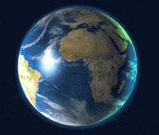
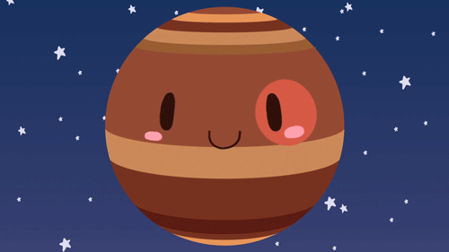
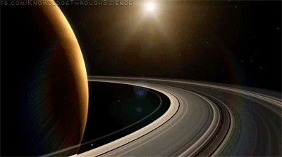
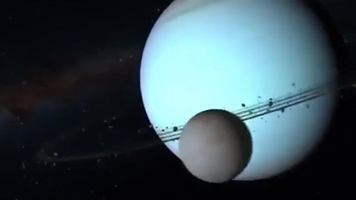
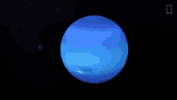

The Solar System is the gravitationally bound system of the Sun and the objects that orbit it It was formed 4.6 billion years
ago when a dense region of a molecular cloud collapsed, forming the Sun and a protoplanetary disc. The Sun is an ordinary main
sequence star that maintains a balanced equilibrium by the fusion of hydrogen into helium at its core, releasing this energy from
its outer photosphere.The largest objects that orbit the Sun are the eight planets.
In order from the Sun, they are four terrestrial planets (Mercury, Venus, Earth and Mars); two gas giants (Jupiter and Saturn);
and two ice giants (Uranus and Neptune). All terrestrial planets have solid surfaces. Inversely, all giant planets do not have a
definite surface, as they are mainly composed of gases and liquids. Over 99.86% of the Solar System's mass is in the Sun and nearly
90% of the remaining mass is in Jupiter and Saturn
>
Mercury
Mercury is the closest planet to the sun and also the smallest planet in the solar system.The small and cratered
planet does not have any moons and zips around the sun faster than any other planet in the solar system, hence why the
Romans named it after their swift-footed messenger god.
Venus
Venus is the second planet from the Sun. It is a terrestrial planet and is the closest in mass and size to its orbital neighbour
Earth. Venus is notable for having the densest atmosphere of the terrestrial planets, composed mostly of carbon dioxide with a
thick, global sulfuric acid cloud cover. At the surface it has a mean temperature of 737 K and a pressure of 92 times that of
Earth's at sea level. These conditions are extreme enough to compress carbon dioxide into a supercritical state close to Venus's
surface.
Earth

Earth is the third planet from the Sun and the only astronomical object known to harbor life. This is enabled by Earth being a
water world, the only one in the Solar System sustaining liquid surface water. Almost all of Earth's water is contained in its
global ocean, covering 70.8% of Earth's crust. The remaining 29.2% of Earth's crust is land, most of which is located in the form
of continental landmasses within Earth's land hemisphere. Most of Earth's land is somewhat humid and covered by vegetation,
while large sheets of ice at Earth's polar deserts retain more water than Earth's groundwater, lakes, rivers and atmospheric
water combined. Earth's crust consists of slowly moving tectonic plates, which interact to produce mountain ranges, volcanoes,
and earthquakes. Earth has a liquid outer core that generates a magnetosphere capable of deflecting most of the destructive solar
winds and cosmic radiation.
Mars is the fourth planet from the Sun. The surface of Mars is orange-red because it is covered in iron(III) oxide dust, giving it
the nickname "the Red Planet".[21][22] Mars is among the brightest objects in Earth's sky and its high-contrast albedo features have
made it a common subject for telescope viewing. It is classified as a terrestrial planet and is the second smallest of the Solar
System's planets with a diameter of 6,779 km (4,212 mi). In terms of orbital motion, a Martian solar day (sol) is equal to 24.5
hours and a Martian solar year is equal to 1.88 Earth years (687 Earth days). Mars has two natural satellites that are small and
irregular in shape: Phobos and Deimos.
Jupiter

Jupiter is the fifth planet from the Sun and the largest in the Solar System. A gas giant, Jupiter's mass is more than two and a
half times that of all the other planets in the Solar System combined and slightly less than one one-thousandth the mass of the Sun.
Jupiter orbits the Sun at a distance of 5.20 AU (778.5 Gm) with an orbital period of 11.86 years. It is the third brightest natural
object in the Earth's night sky after the Moon and Venus and has been observed since prehistoric times. Its name derives from Jupiter
the chief deity of ancient Roman religion.
Saturn

Saturn is the sixth planet from the Sun and the second-largest in the Solar System, after Jupiter. It is a gas giant with an
average radius of about nine-and-a-half times that of Earth.[26][27] It has only one-eighth the average density of Earth,
but is over 95 times more massive.[28][29][30] Even though Saturn is nearly the size of Jupiter, Saturn has less than one-third
of Jupiter's mass. Saturn orbits the Sun at a distance of 9.59 AU (1,434 million km) with an orbital period of 29.45 years.
Uranus

Uranus is the seventh planet from the Sun. It is a gaseous cyan-coloured ice giant. Most of the planet is made of water,
ammonia, and methane in a supercritical phase of matter, which in astronomy is called 'ice' or volatiles. The planet's
atmosphere has a complex layered cloud structure and has the lowest minimum temperature of 49 K (−224 °C; −371 °F)
out of all the Solar System's planets. It has a marked axial tilt of 82.23° with a retrograde rotation period of 17
hours and 14 minutes. This means that in an 84-Earth-year orbital period around the Sun, its poles get around 42 years of
continuous sunlight, followed by 42 years of continuous darkness.
Neptune

Neptune is the eighth and farthest known planet from the Sun. It is the fourth-largest planet in the Solar System by diameter,
the third-most-massive planet, and the densest giant planet. It is 17 times the mass of Earth, and slightly more massive than
fellow ice giant Uranus. Neptune is denser and physically smaller than Uranus because its greater mass causes more gravitational
compression of its atmosphere. Being composed primarily of gases and liquids, it has no well-defined solid surface. The planet
orbits the Sun once every 164.8 years at an orbital distance of 30.1 astronomical units (4.5 billion kilometres; 2.8 billion miles).
It is named after the Roman god of the sea and has the astronomical symbol ♆, representing Neptune's trident